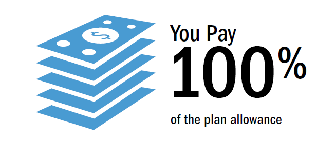
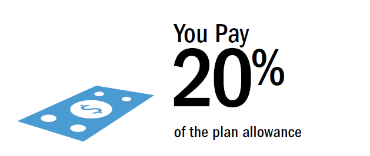

| High Deductible Health Plan | Contributions to a Health Savings Account |
How Do They Work Together?Under the High Deductible Health Plan (HDHP) you will pay the full negotiated costs for all of your medical services (other than preventive). The plan will only begin to pay benefits after the plan deductible is met. The full family deductible must be met if family coverage is elected. Here’s an example of how the plan would work if you were to visit your In-Network Primary Care Doctor. |
|
| Before you meet your deductible:  | After you meet your deductible:  |
|
Instead of paying a copay, you will pay the full plan allowance (negotiated cost) of your visit to the doctor. |
You will be responsible for 20% of the plan allowance. The plan will pay the remaining 80% of the cost. Coinsurance will apply until the plan's out-of-pocket maximum is met. |
You can use your Health Savings Account to pay your medical bill. |
|
You can think of an HSA as a personal savings account used for qualified health care expenses with an impressive tax advantage. It is also
worth noting that the account is yours to keep – even if you leave Tyson Foods. Additional details about the HSA can be found through your Tyson Benefits Counselor. You can only enroll in the HSA if you elect the High Deductible Plan.
Access and manage your account at www.WageWorks.com.
1. Tyson Foods contributes to the account. If you enroll in the HDHP, Tyson will contribute $250 to your HSA ($500 if you elect family coverage) annually to help you meet the plan’s higher deductible. The amount will be prorated ($125/individual, $250/family) if your benefits are effective 7/1-12/1. The account is administered by WageWorks.
2. Save on taxes. If you would like to add more funds to the account, you can contribute money from your paycheck before taxes are taken out ($100 minimum annually, up to the yearly IRS limits).
3. Use your HSA. You can use your HSA to pay for eligible health care expenses on a pre-tax basis.* Funds must be in the account before it can be used (this is different than an FSA).
Examples include: Coinsurance, deductibles, prescriptions, and dental & vision expenses. A full list of eligible expenses is available at www.WageWorks.com.
4. Grow your HSA. If you don’t spend all of the money in 2017, all available funds roll over year after year, and allow the account to grow over time. In fact, like a 401(k), you can invest your funds among a choice of investment options with a minimum $1,000 investment.
|
How much can you contribute? |
2017 IRS Contribution Limit |
Annual Tyson Foods Contribution |
Your maximum Contribution Amount |
| Team Member Coverage | $3,400+ | $250 ($125 if effective 7/1-12/1) | $3,150 ($100 minimum) |
| Family Coverage | $6,750+ | $500 ($250 if effective 7/1-12/1) | $6,250 ($100 minimum) |
| *Any reference to taxes is at the federal level. State tax rules may vary. + If an individual reaches age 55 by the end of the calendar year, he or she can contribute an additional $1,000. | |||
• You cannot be covered by another medical plan, for example, through your spouse (unless your spouse’s plan is also qualifying HDHP)
• Because they cover the same things, neither you nor your spouse can participate in a general-purpose Health Care Flexible Spending Account (FSA)
• You cannot be a veteran who received medical benefits from the Veterans Administration in the last three months
• You cannot be enrolled in Medicare
• You cannot be claimed as a dependent on someone else’s tax return
• You cannot be covered by a government military health plan (Tricare); and
• You must be a U.S. resident and not a resident of American Samoa
If you are ineligible for HSA contributions, you should consider enrolling in the Traditional PPO. Otherwise, any contributions to your HSA would be recognized as income.
Health Savings Account (HSA) Disclosure: For administrative convenience, Tyson has chosen to make HSA contributions for eligible TEAM Members by direct deposit to HSAs established at bank custodian BNY Mellon. You will be provided with information about how to access and manage your HSA account through BNY Mellon. Neither the Tyson arrangement for making contributions to the HSAs nor the HSAs themselves are welfare benefit plans under the Employee Retirement Income Security Act of 1974.
Your HSA is an individual account – it is not group-based. You are responsible for managing your HSA, including choosing how your HSA funds are invested and following the rules established by BNY Mellon and the IRS. You are responsible for reporting contributions made to your HSA (whether made by you or on your behalf by Tyson) and for reporting distributions from your HSA. You must determine whether your HSA distributions are taxable or whether they are used for qualified medical expenses (and thus are not taxed by the IRS). BNY Mellon may offer investment options for your HSA account balance.
Tyson does not review, influence, or make any endorsement regarding the investment options or investment of your HSA funds. All investing is subject to risk and your HSA may lose value. You should consult a tax advisor or financial consultant to determine what, if any, investments are appropriate for you.
Once contributions have been deposited in your HSA at BNY Mellon, you are free to request a distribution of the funds or move them to another HSA trustee or custodian, to the extent allowed by law. For more information about HSAs, including who is eligible, other health coverage that might disqualify an individual from being eligible, contribution limits, and other rules, see IRS Publication 969 (Health Saving Accounts and Other Tax-Favored Health Plans).
Copyright © 2016 · All Rights Reserved · Tyson Foods, Inc